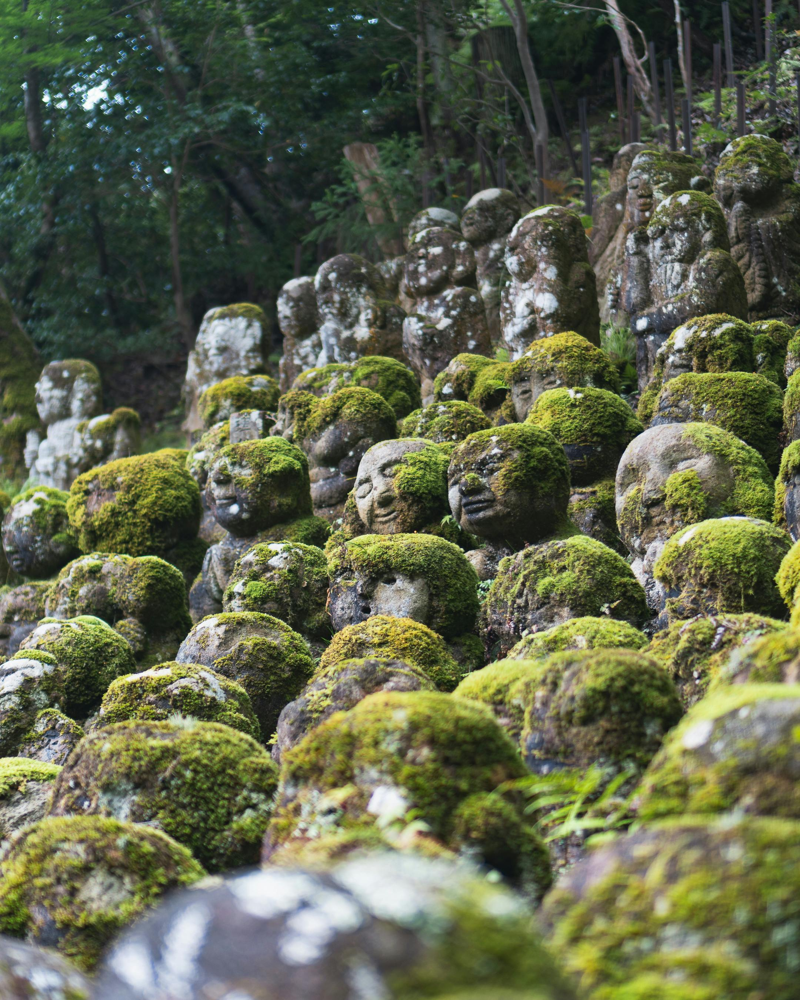
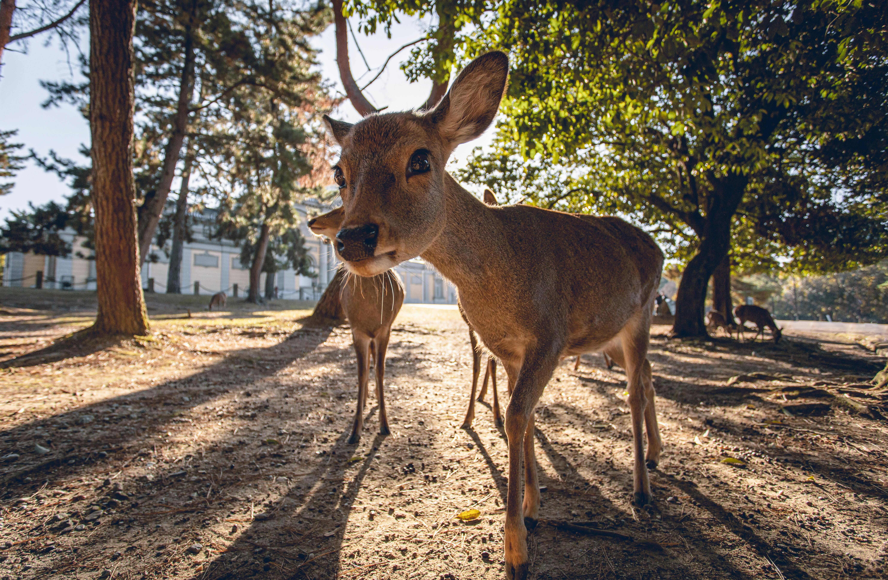

Welcome to Japan
Scenic Views
|
Japanese Culture
|
Top Places
Scenic Views
Mount Fuji
Tokyo Tower

Kyoto Temple

Nara Deer Park
Explore more about Japan
Japanese Culture
Onsen
A traditional hot spring bath enjoyed in Japan for relaxation and healing.
Popular Destinations
Top Cities in Japan
City
Highlight
Tokyo
Modern culture and skyscrapers
Kyoto
Temples and traditions
Osaka
Street food and nightlife
Popular Japanese Foods
Sushi
Takoyaki
Udon
Okonomiyaki
Plan Your Visit
Find Kyoto on
Google Maps
.